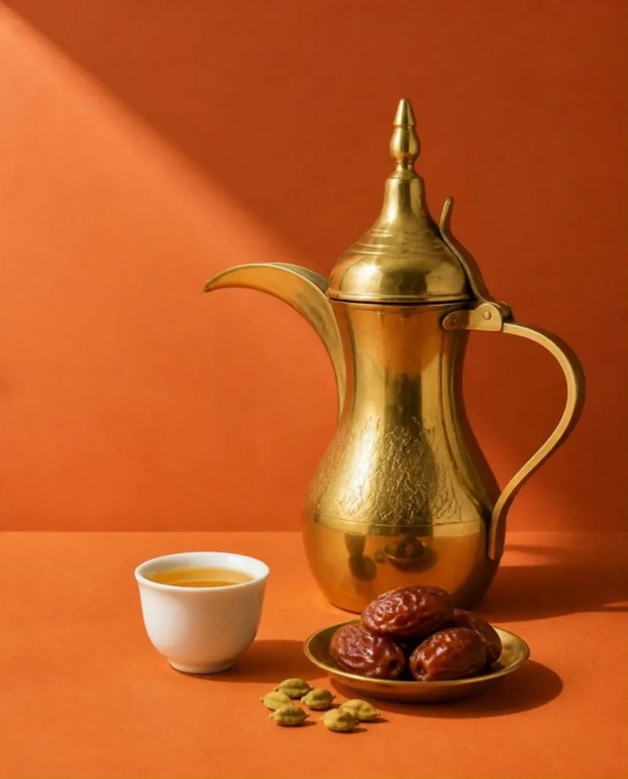
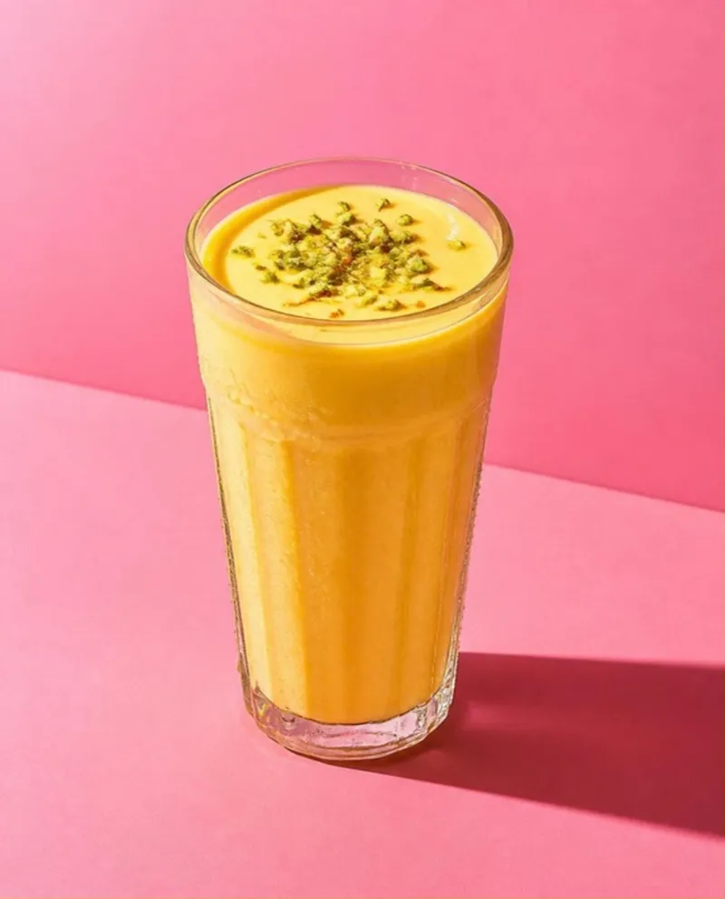
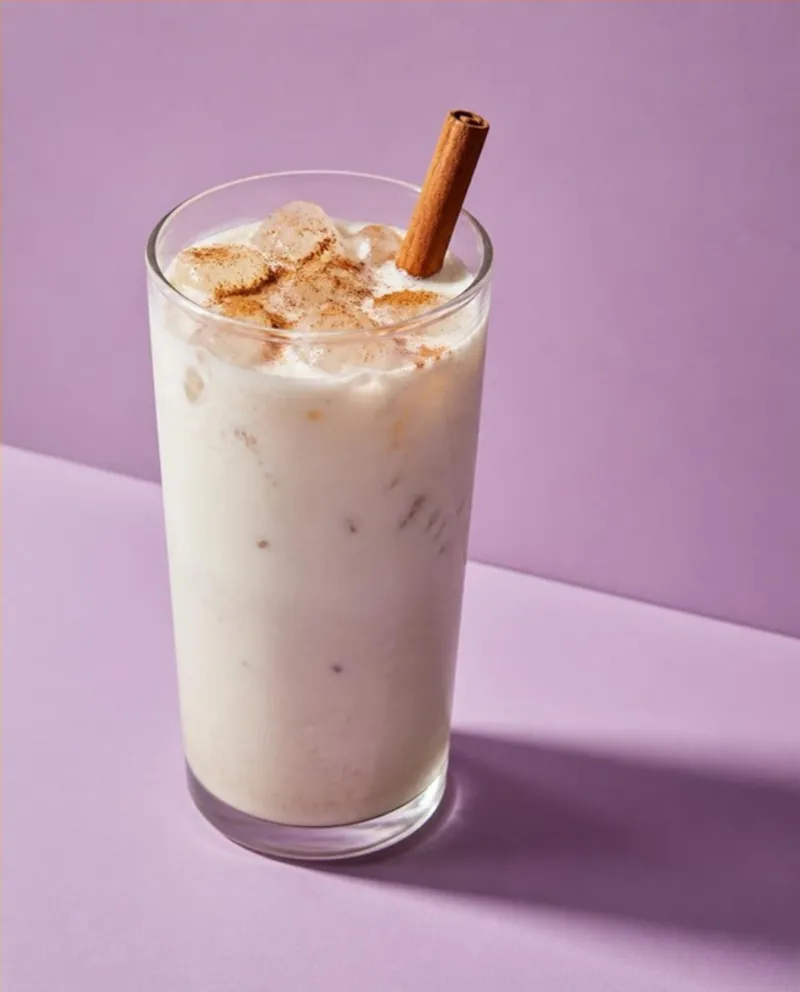
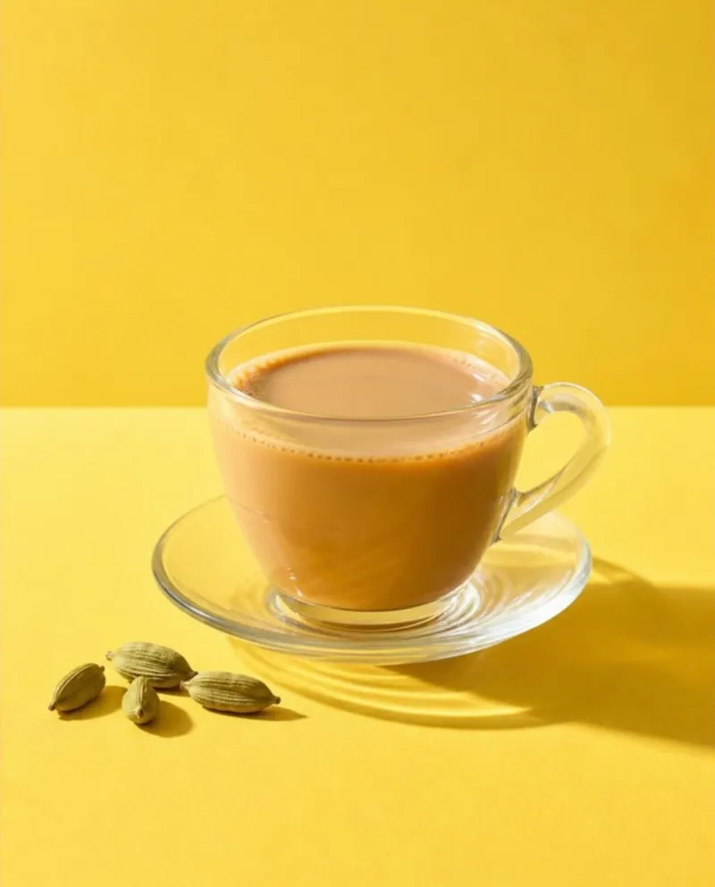
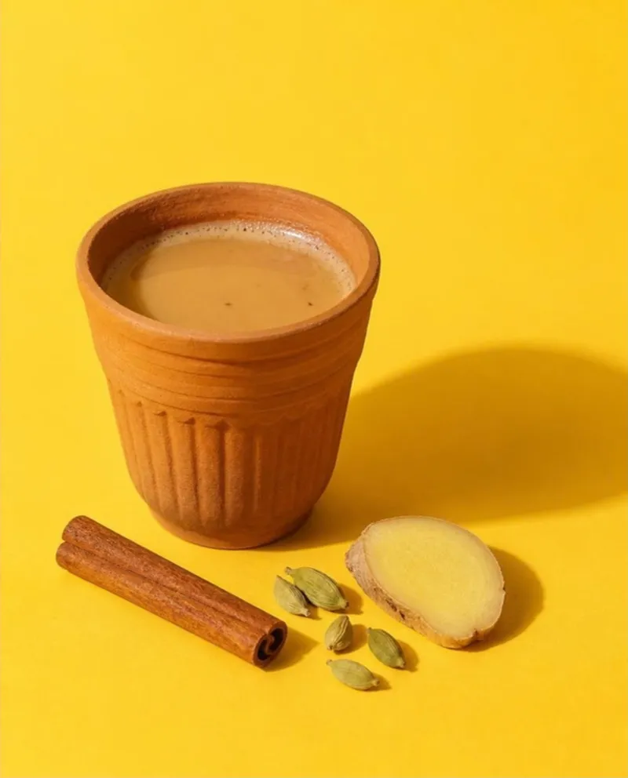
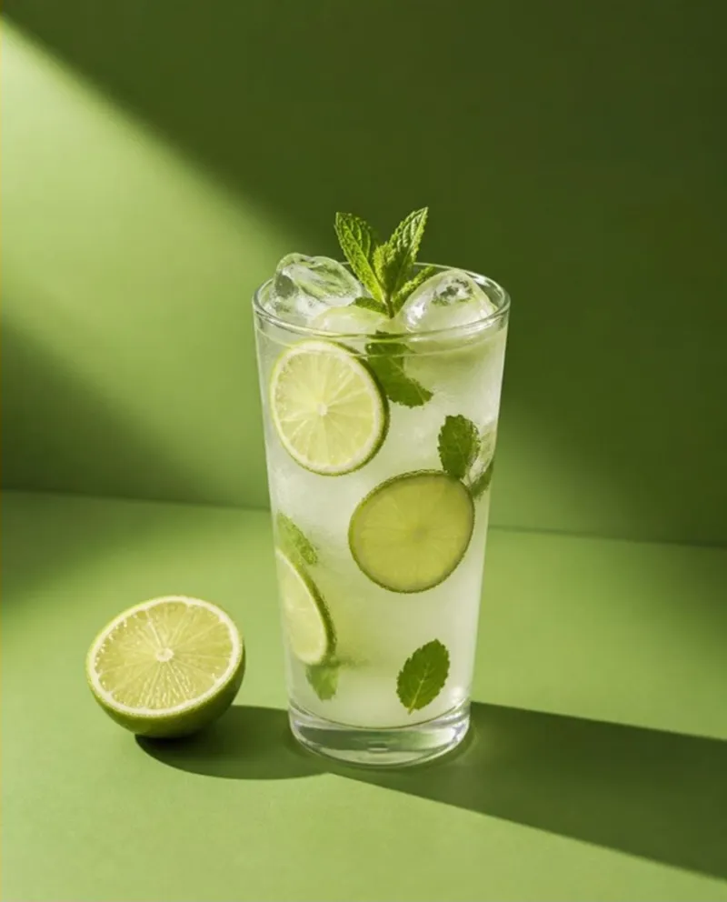
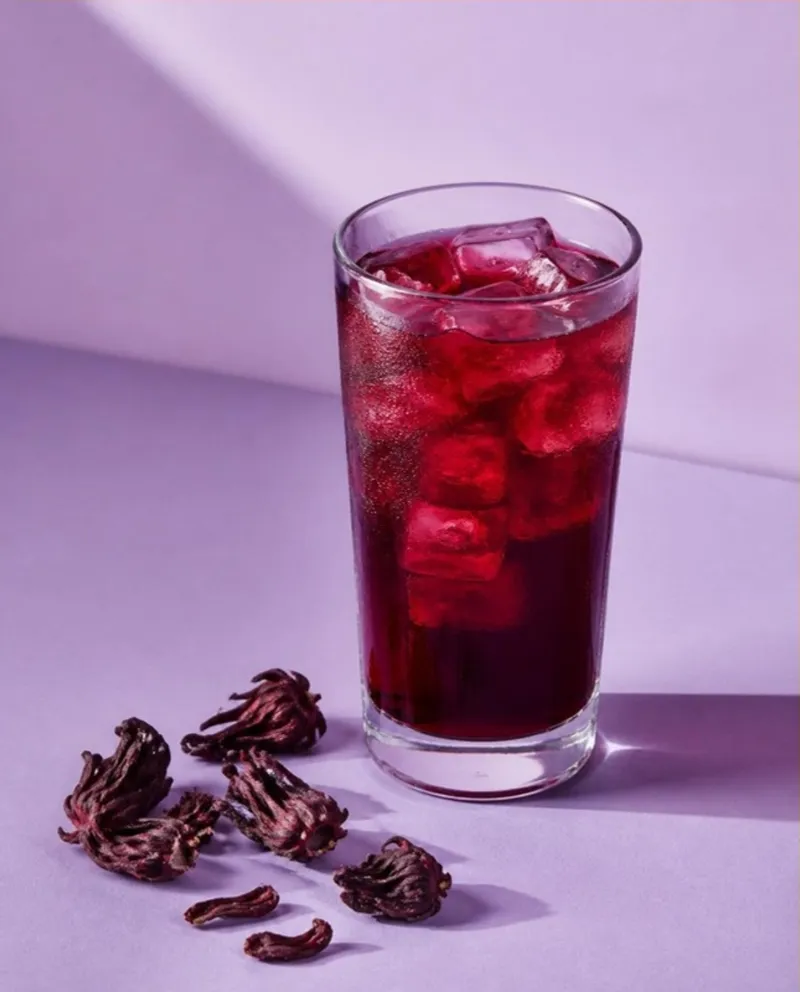

Back of house
The Atlas
Every drink we’ve poured so far, with filters. Prefer wandering? Take the map →
nothing here yet. the atlas is thirsty too

Hotقهوة عربيةArabic coffeeHotCaffeine: MediumRoom →
Coldلسی · लस्सीMango lassiColdCaffeine: NoneRoom →- Cold抹茶Iced matcha latteColdCaffeine: MediumRoom →

Coldhorchata de arrozHorchataColdCaffeine: NoneRoom →- ColdAlcoholpisco sourPisco sourColdCaffeine: NoneRoom →

Hotشاي كركKarak chaiHotCaffeine: HighRoom →
Hotमसाला चाय · مسالہ چائےMasala chaiHotCaffeine: MediumRoom →
Coldनींबू पानीNimbu paniColdCaffeine: NoneRoom →- HotTürk kahvesiTurkish coffeeHotCaffeine: HighRoom →
- ColdayranAyranColdCaffeine: NoneRoom →
- Cold珍珠奶茶Bubble teaColdCaffeine: LowRoom →

Coldagua de jamaicaAgua de jamaicaColdCaffeine: NoneRoom →- Hotmate · chimarrãoMateHotCaffeine: MediumRoom →
- ColdAlcoholcaipirinhaCaipirinhaColdCaffeine: NoneRoom →